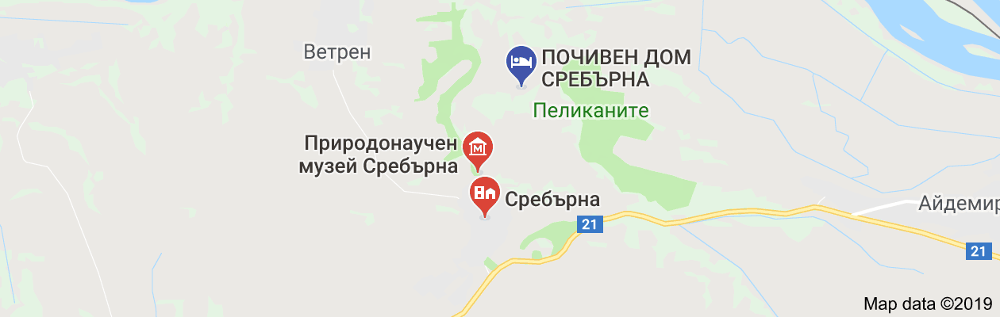
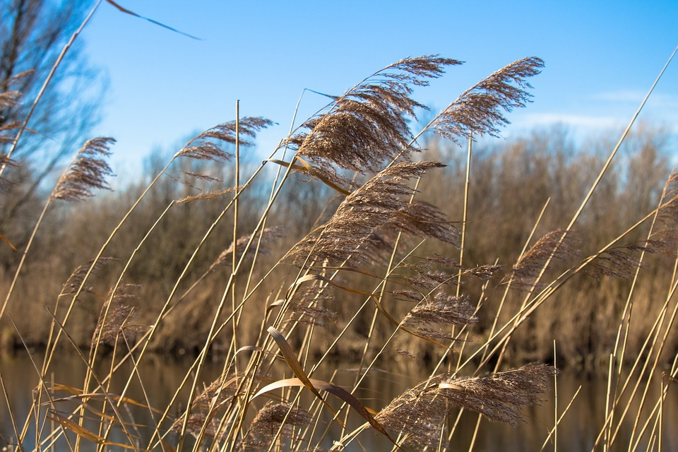
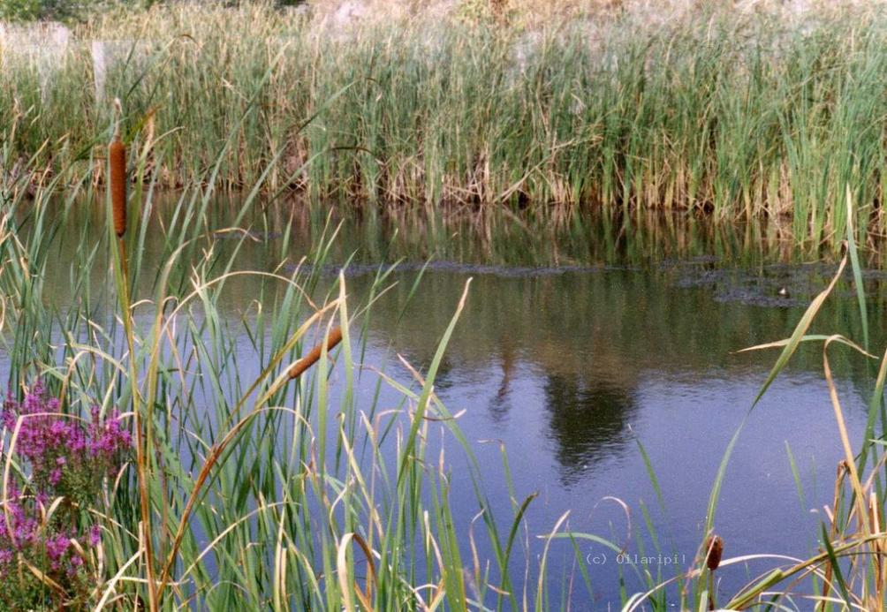
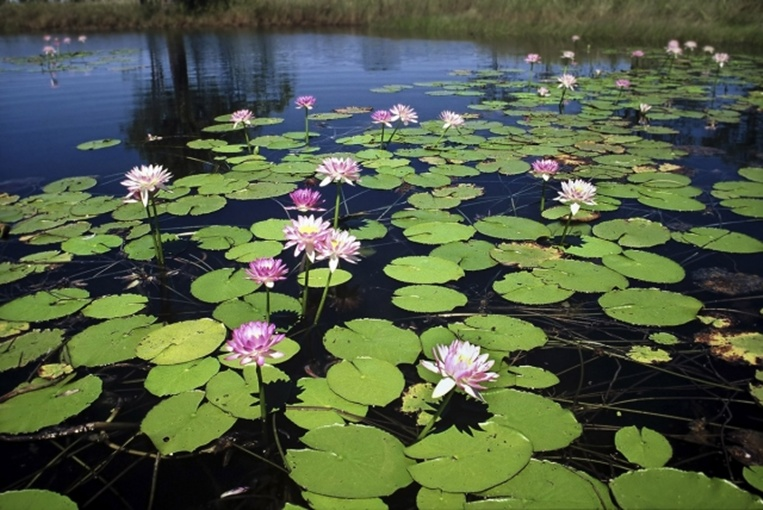
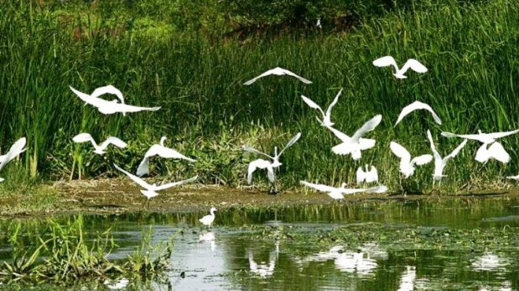

Сребърна
Сребърна е резерват разположен край село Сребърна на 18 км. западно от град Силистра и на 2 км. от река Дунав.
Той обхваща ез. Сребърна и неговите околности. Резерватът се намира на главното миграционно трасе на прелетните птици
между Европа и Африка. Видовете представляващи най-голям интерес са Kъдроглавия пеликан, Бялата чапла, Нощната чапла,
Червената чапла, Блестящя ибис, Белия лопатар.
Местоположение

Разположен е край село Сребърна, на 16 километра западно от Силистра и на 2 километра южно от Дунав. Обхваща езерото Сребърна и неговите околности.
Намира се на главното миграционно трасе на прелетните птици между Европа и Африка, наречено „Via Pontica“.
История
Има няколко легенди за произхода на името. Едната е за кан Сребрун, който загива по тези места в неравен бой с печенегите. Втората легенда разказва за заровена лодка, пълна със сребро, по бреговете на блатото. Третата легенда, която е най – правдоподобна, гласи, че името идва от вълшебната картина, наблюдавана вечерно време при пълнолуние. Когато луната е високо, нейното отражение създава илюзията за разтопено сребро.
През 1913 г., след подписване на Букурещкия мирен договор, територията на резервата, заедно с цяла Южна Добруджа, попада в пределите на Румъния. През 1940 г. с подписване на Крайовската спогодба (1940) Добруджа отново преминава в територията на Българската държава.
Първият българин, проявил интерес към това място, е Алекси Петров, който е посетил резервата през 1911. Той бил запленен от красотата на птичия свят и запланувал поредица от експедиции. Алекси Петров отново посещава резервата през 1940 г., за да проучи птичите колонии, гнездящи там. В миналото местността е посещавана от Феликс Каниц, а през 1880 г. я посещава и друг австриец – това е Едуард Ходек. Той описва своите впечатления в статията „Домът на прелетниците“. Най-черната страница от историята на тази красива местност записва Лео фон Калберматен.
Той и неговите хора избиват хиляди малки и големи чапли. Тогавашната мода е изисквала на дамските шапки да има пера от тези птици. Друг изследовател, посетил Сребърна е Отомар Райзер. Той е автор на книгата „Материали на Българския орнис“, като вторият том на книгата е посветен на българската фауна.
Флора



В езерото и около него има тръстика и други водолюбиви растения. Растителното съобщество от тръстика заема около 2/3 от площта на резервата. Тук се срещат 139 вида висши растения, като 11 от тях са редки или застрашени от изчезване извън територията на Сребърна. Вторият по разпространение растителен вид е тънколистният папур (Typha angustifolia), следван от широколистния папур (Typha latifolia). Сивата (Salix cinerea) и червената върба (Salix purpurea) също са широко разпространени.
Фауна

Животинският свят в резервата е много разнообразен. Срещат се 41 вида бозайници, 11 вида влечуги, 10 вида земноводни и 24 вида риби – видра, европейска дива котка, степна скачаща мишка, воден плъх, смок мишкар, голям стрелец, шипобедрена костенурка, сирийска чесновица (Pelobates Syriacus), жаба дървесница, червенокоремна бумка, щука, каракуда, червеноперка, езерен рак и др.
Резерватът е известен най-вече с птиците, които могат да се наблюдават на неговата територия. 221 вида птици гнездят в резерват Сребърна: къдроглав пеликан, розов пеликан, малък корморан, блестящ ибис, лопатар, ням лебед, белоока потапница, малка белочела гъска, червеногуша гъска, сива гъска, патици, тръстиков блатар, синьогушка, мустакат синигер. Тук е единственото традиционно в България гнездово находище на голяма бяла чапла.